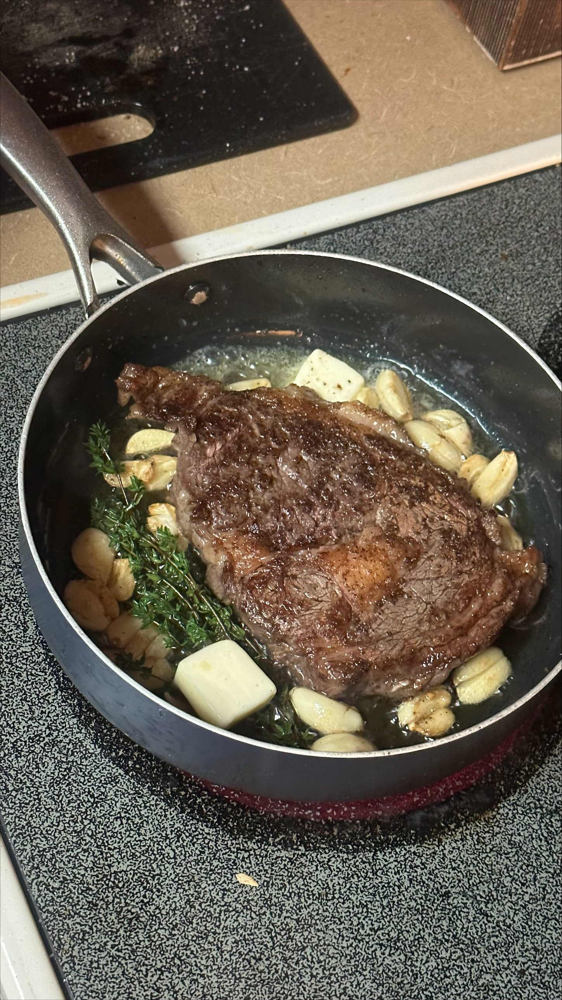

Brynn's Ribeye Steak

Description
Thick cut ribeye made with garlic, thyme, and butter!
Incredients
- 16 Ounce Ribeye
- 2 Tablespoons of Butter
- Thyme
- Garlic Cloves, Amount as Desired
- Olive Oil
- Salt
- Pepper
Steps
- Prepare cuts of steak for seasoning before cooking by salting and peppering. Let sit for 20 minutes.
- After seasoning, peel garlic cloves and mash to desired amount.
- Cut tablespoons of butter and have ready for cooking.
- Prepare sides of your choosing beforehand, so that you may enjoy your steak hot!
- Heat pan on stove to highest setting. Add olive oil once heated and slightly smoking.
- Sear steak on both sides, cooking to desired temperature.
- Half way through cooking, add garlic to pan. Keep it in the oil and rub all over the steak as you cook.
- Shortly after adding garlic cloves, add thyme and do the same thing.
- As you finish cooking your steak, add butter and baste for a few moments.
- Remove steak from pan and insert into mouth! Enjoy!